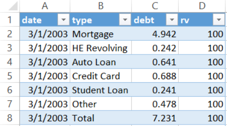
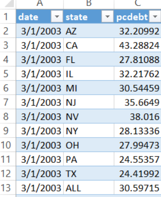

TODAY the NEW YORK FEDERAL RESERVE BANK released its Quarterly Report on Household Debt and Credit. These data come from the Center for Microeconomic Data based on credit records from Equifax.
R code for the graphs are posted at bottom of page
Trends in household debt balances
One of the key statistics tracked in the report (full data can be found here) is household debt balances. They break debt balances out by loan type:
- mortgage debt
- student loans
- auto loans
- credit cards
- home equity revolving debt
- other debt
Mortgage debt is by far the largest component of household debt. Out of the $12.3 trillion in debt in 2016Q2, mortgage debt comprises $8.4 trillion per the FRBNY Consumer Credit Panel. From 2003Q1 through 2016Q2 mortgage debt has ranged from 68% to 74% of total debt balances.
If you take away mortgage debt you can more easily compare the trends in other forms of household debt.

While most forms of debt rose, fell and recovered leading up to, during, and after the Great Recession, student debt has pretty much gone up in a straight line.
If you use an index so that 2003Q1 = 100, you can include mortgage and total debt:

The trend is striking, but I think it jumps out at you even more if you use an animated gif:

State per capita debt trends
The panel also reports on per capita household debt by select states. In general per capita debt levels have stabilized after falling during the Great Recession. The debt trends are diven primarily by mortgage debt, so states with volatile house prices and high rates of foreclosure (e.g. AZ, FL, NV) have had the greatest volatility in per capita debt levels.
But in recent quarters most states are trending modestly higher.

Code for plots
If you’ve read some of my earlier posts here and here then generating these plots is rather strightforward.
I have been meaning to do more data wrangling in R, but I’m still falling back on Excel tricks.
For the first three plots I’ve collected my data in a text file called debt2016q2.txt. The datafile has four columns and looks like:

For the state level data I have another data file with a similar format called pcdebt2016q2.txt:

Using these data files we can generate the plots using the following code:
{% highlight r #Set up libraries library(ggplot2) library(scales) library(animation) library(ggthemes) library(data.table) library(ggrepel)
#Load data data <- fread(“data/debt2016q2.txt”) data$date<-as.Date(data$date, format=“%m/%d/%Y”)
dlist<-unique(data$date) #unique set of dates N<-length(dlist) #number of dates
#Create static plots:
In levels
ggplot(data=data[type !=“Total” & type !=“Mortgage”,],aes(x=date,y=debt,color=type,label=type))+ #exclude mortgage and total lines
geom_line(size=1.2)+ #add lines geom_text_repel(data=data[date==dlist[N] & type != “Total”& type !=“Mortgage”,],nudge_x=10,nudge_y=.025)+ #add labels at end
#style plot:
theme_minimal()+ #use minimal theme from ggthemes library
theme(plot.title=element_text(size=14))+theme(plot.caption=element_text(hjust=0,vjust=1,margin=margin(t=10)))+
theme(plot.margin=unit(c(0.25,0.25,0.25,0.25),"cm"))+
coord_cartesian(xlim=c(as.Date("2003-01-01"),as.Date("2017-03-30")))+
theme(legend.position="none")+
labs(title="Household debt balances",
subtitle="Trillions of Dollars",
x="",y="",caption="@lenkiefer Source: FRBNY Consumer Credit Panel/Equifax")
Using indexed data
ggplot(data=data,aes(x=date,y=rv,color=type,label=type))+geom_line(size=1.2)+ geom_text_repel(data=data[date==dlist[N],],nudge_x=10,nudge_y=.025)+ #add labels at end
scale_y_continuous(breaks=seq(0,550,50))+ #set axis
coord_cartesian(xlim=c(as.Date("2003-01-01"),as.Date("2017-03-30")), y=c(0,550))+
#style plot:
theme_minimal()+ #use minimal theme from ggthemes library
theme(plot.title=element_text(size=14))+theme(plot.caption=element_text(hjust=0,vjust=1,margin=margin(t=10)))+
theme(plot.margin=unit(c(0.25,0.25,0.25,0.25),"cm"))+
theme(legend.position="none")+
labs(title="Household debt balances",
subtitle="Index (2003 Q1 = 100)",
x="",y="",caption="@lenkiefer Source: FRBNY Consumer Credit Panel/Equifax")
#Create animated gif
oopt = ani.options(interval = 0.15) saveGIF({for (i in 5:N) { g<- ggplot(data=data[date<=dlist[i],],aes(x=date,y=rv,color=type,label=type))+geom_line(size=1.2)+theme_minimal()+ geom_text_repel(data=data[date==dlist[i],],nudge_x=10,nudge_y=.025)+ scale_y_continuous(breaks=seq(0,550,50))+ coord_cartesian(xlim=c(as.Date(“2003-01-01”),as.Date(“2017-03-30”)), y=c(0,550))+ theme(plot.title=element_text(size=14))+theme(plot.caption=element_text(hjust=0,vjust=1,margin=margin(t=10)))+ theme(plot.margin=unit(c(0.25,0.25,0.25,0.25),“cm”))+ theme(legend.position=“none”)+ labs(title=“Household debt balances”, subtitle=“Index (2003 Q1 = 100)”, x=“”,y=“”,caption=“@lenkiefer Source: FRBNY Consumer Credit Panel/Equifax”)
print(g)
ani.pause()
} #pause at end for (i2 in 1:10) { print(g) ani.pause() } },movie.name=“debt balances 2016Q2.gif”,ani.width = 740, ani.height = 550)
Create state plot:
load state data
sdata <- fread(“data/pcdebt2016q2.txt”) sdata$date<-as.Date(sdata$date, format=“%m/%d/%Y”)
dslist<-unique(sdata$date) #unique set of dates Ns<-length(dlist) #number of dates
ggplot(data=sdata,aes(x=date,y=pcdebt,color=state,label=round(pcdebt,0)))+geom_line(size=1.2)+theme_minimal()+ geom_text_repel(data=sdata[date==dslist[N],],nudge_x=10,nudge_y=.025)+ facet_wrap(~state,ncol=3) + scale_y_log10(limits=c(20,90),breaks=seq(25,90,15))+ theme(plot.title=element_text(size=14))+theme(plot.caption=element_text(hjust=0,vjust=1,margin=margin(t=10)))+ theme(plot.margin=unit(c(0.25,0.25,0.25,0.25),“cm”))+ coord_cartesian(xlim=c(as.Date(“2003-01-01”),as.Date(“2017-03-30”)))+ theme(legend.position=“none”)+ labs(title=“Per capita household debt”, subtitle=“Thousands of dollars, (Based on the population with a credit report) “, x=“”,y=“per capita debt (Ths $, log scale)”,caption=“@lenkiefer Source: FRBNY Consumer Credit Panel/Equifax”) {% endhighlight